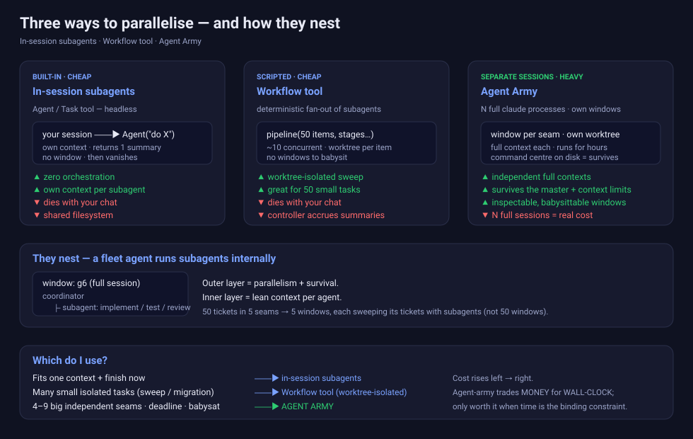

A fleet of autonomous Claude Code agents, one per independent seam of work, coordinated by a changeable master through an on-disk command centre. — How it works, and when to reach for it instead of subagents.

Agent-army is the back half of a two-session pipeline. Keep speccing and building in separate sessions — speccing is judgement-heavy and interactive, implementation is parallel and autonomous, and splitting them means the build never burns the spec session's context.
Session A — SPEC decompose the app into independent seams; write each seam's brief
spec source is pluggable: OpenSpec change · Todoist tasks ·
JIRA tickets · or a plain .md brief (even a near-empty stub)
▼ hand the specs over
Session B — IMPLEMENT agent-army groups the specs, one per agent, and builds them in
parallel — each in its own worktree, PRing the integration branch
One seam = one spec = one agent. The fleet can be (re)launched from the specs at any time.
The Agent/Task tool — a built-in Claude Code feature. A fresh headless Claude with its own context window runs inside your session, does its work, and returns one summary. No window, no persistence.
A deterministic, scripted fan-out of subagents — loops, pipelines, a git worktree per item, ~10 concurrent. The right tool for sweeping many small isolated tasks without babysitting windows.
N full claude processes, each in its own window/tmux pane, own context window, own worktree. Truly concurrent for hours; the command centre on disk means the operation survives any single session.
| Dimension | In-session subagents | Workflow tool | Agent Army |
|---|---|---|---|
| Context window | Own per subagent; summary returns | Own per subagent | Full independent window each |
| Isolation | Shared filesystem (sequential) | Worktree per item | Worktree per agent |
| Parallelism | Batchable; controller blocks | ~10 concurrent, queued | True concurrency, hours/days |
| Survival | Dies with your chat | Dies with chat (resumable) | Survives — disk command centre |
| Inspection | UI shows subagent activity | /workflows progress | Real windows: watch / attach |
| Orchestration | ~zero | low (a script) | heavy (windows, health board) |
| Money | N cheap tool calls | N cheap tool calls | N full sessions |
Recent Claude Code surfaces live subagent activity in the UI, which closes the old "you can't see inside a subagent" gap. But agent-army's value was never only visibility:
Use the subagent UI for visibility into a sweep you're driving now; use agent-army when the work must outlast the session and run as independent long-lived streams.
1. Gather specs from Session A: OpenSpec / Todoist / JIRA / .md — one seam = one agent (4–9)
2. Integration br. cut release/x off the base; every agent PRs into it (never main)
3. Command centre ~/.claude/agent-army/<operation>/ — manifest, briefs, status, runtime
4. Launch + verify launch-agent.sh per agent; confirm a live process in ~15s; record window
5. Monitor fleet-status.sh (health) + where.sh (windows); clear BLOCKs; relaunch
STALLED --resume, DYING fresh; stop-agent.sh the IDLE-BURN ones
6. Assemble two-stage review each PR (spec→quality, in-session) → merge → final PR
→ stop the fleet → remove worktrees → archive the command centre
The master never trusts a single signal. Self-reported status (agent-owned milestone file) plus an objective probe (process alive? last commit age? transcript mtime?) together tell the truth. Agents stall silently at usage limits; commits lag reports; launches lie about success. Liveness is hardened — alive if the recorded PID runs, OR a process matches the agent's brief path, OR a process cwd is under the worktree — so a live agent can't go invisible.
Fits one context + you'll finish it now ............ in-session subagents Many small isolated tasks (sweep / migration) ...... Workflow tool (worktree-isolated) 4–9 big independent seams, deadline, babysat ....... AGENT ARMY Tightly coupled / ordered .......................... sequential
Cost rises left → right. Agent-army trades money for wall-clock; it's only worth ~N× the spend when time is the binding constraint and the work genuinely splits into independent, long-lived seams.
Full design rationale in skills/agent-army/DECISIONS.md · comparison in references/agent-army-vs-subagents.md.